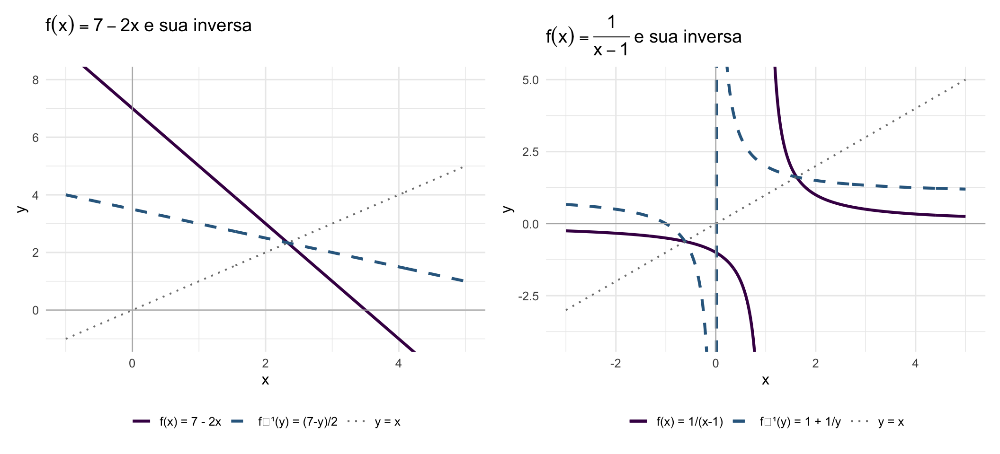

library(ggplot2)
library(patchwork)
base_t <- theme_minimal(base_size = 12)
# Exemplo 1: f(x) = 7 - 2x, f^{-1}(y) = (7-y)/2
x1 <- seq(-1, 5, length.out = 300)
df1 <- data.frame(
x = x1,
f = 7 - 2*x1,
inv = (7 - x1)/2,
ref = x1
)
p1 <- ggplot(df1, aes(x)) +
geom_line(aes(y = f, color = "f(x) = 7 - 2x"), linewidth = 1.1) +
geom_line(aes(y = inv, color = "f⁻¹(y) = (7-y)/2"), linewidth = 1.1, linetype = "dashed") +
geom_line(aes(y = ref, color = "y = x"), linewidth = 0.7, linetype = "dotted") +
geom_hline(yintercept = 0, color = "gray70", linewidth = 0.4) +
geom_vline(xintercept = 0, color = "gray70", linewidth = 0.4) +
coord_cartesian(xlim = c(-1, 5), ylim = c(-1, 8)) +
scale_color_manual(values = c("f(x) = 7 - 2x" = "#440154",
"f⁻¹(y) = (7-y)/2" = "#31688e",
"y = x" = "gray50")) +
labs(title = expression(f(x) == 7-2*x ~ "e sua inversa"),
x = "x", y = "y", color = NULL) +
theme_minimal(base_size = 12) + theme(legend.position = "bottom")
# Exemplo 4: f(x) = 1/(x-1), f^{-1}(y) = 1 + 1/y
x2p <- seq(1.05, 5, length.out = 300)
x2n <- seq(-3, 0.95, length.out = 300)
df2p <- data.frame(x = x2p, f = 1/(x2p-1), inv = 1 + 1/x2p)
df2n <- data.frame(x = x2n, f = 1/(x2n-1), inv = 1 + 1/x2n)
ref2 <- data.frame(x = seq(-3, 5, length.out = 300), y = seq(-3, 5, length.out = 300))
p2 <- ggplot() +
geom_line(data = df2p, aes(x, f, color = "f(x) = 1/(x-1)"), linewidth = 1.1) +
geom_line(data = df2n, aes(x, f, color = "f(x) = 1/(x-1)"), linewidth = 1.1) +
geom_line(data = df2p, aes(x, inv, color = "f⁻¹(y) = 1 + 1/y"), linewidth = 1.1, linetype = "dashed") +
geom_line(data = df2n, aes(x, inv, color = "f⁻¹(y) = 1 + 1/y"), linewidth = 1.1, linetype = "dashed") +
geom_line(data = ref2, aes(x, y, color = "y = x"), linewidth = 0.7, linetype = "dotted") +
geom_hline(yintercept = 0, color = "gray70", linewidth = 0.4) +
geom_vline(xintercept = 0, color = "gray70", linewidth = 0.4) +
coord_cartesian(xlim = c(-3, 5), ylim = c(-4, 5)) +
scale_color_manual(values = c("f(x) = 1/(x-1)" = "#440154",
"f⁻¹(y) = 1 + 1/y" = "#31688e",
"y = x" = "gray50")) +
labs(title = expression(f(x) == frac(1, x-1) ~ "e sua inversa"),
x = "x", y = "y", color = NULL) +
theme_minimal(base_size = 12) + theme(legend.position = "bottom")
p1 + p2